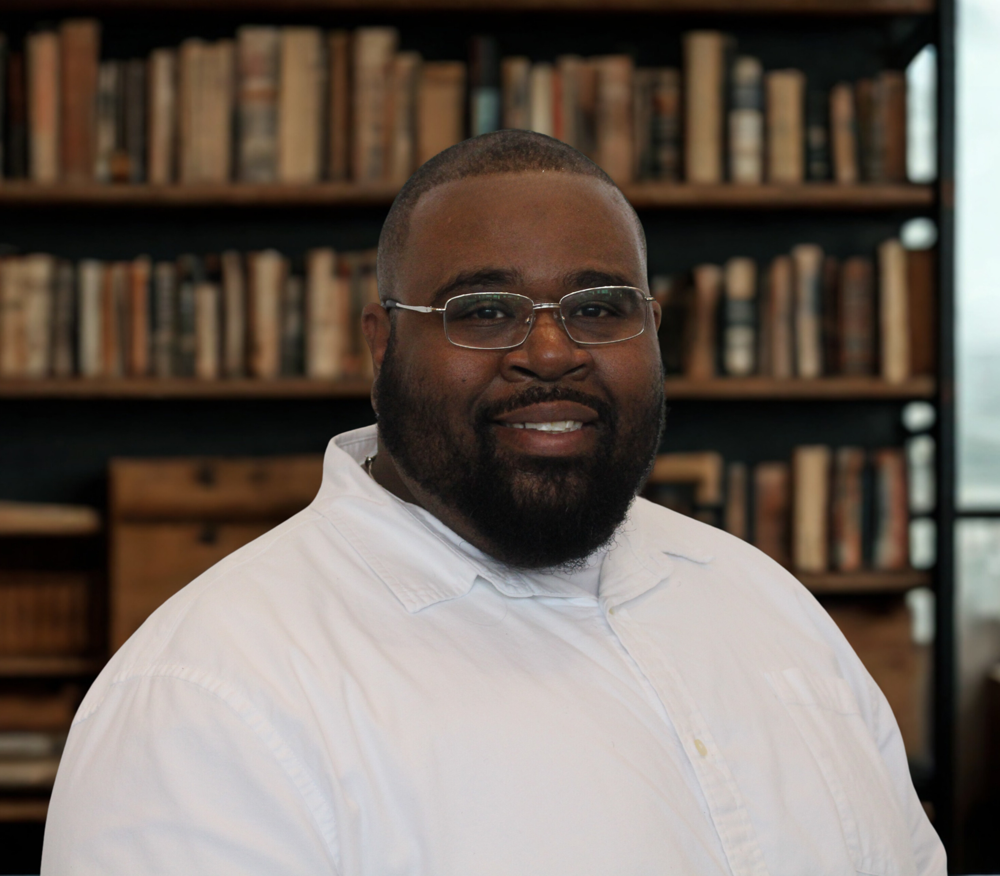

Welcome to my web portfolio. This site highlights my academic work, professional interests, and goals in library and information science.
The purpose of this portfolio is to present my growth as a student, library worker, and future information professional.
I believe libraries are essential spaces for access, learning, creativity, and community connection. As an information professional, I value service, organization, inclusion, and helping people find the information they need.
